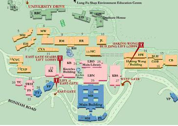

Dijkstras Algoritmn

In addition to Euler and Hamiltonian circuits, we also delved into Dijkstra's algorithm during week 16. This topic piqued my interest as it is a well-known algorithm used to solve shortest path problems. I had encountered mentions of it in various contexts such as in gaming and mapping applications, and I was eager to understand its workings in more detail. Despite the initial complexity of the topic, I found myself intrigued by the practical applications and real-world relevance of Dijkstra's algorithm.
This algorithm addresses the shortest path problem, which involves finding the shortest path between two nodes in a graph. The significance of Dijkstra's algorithm lies in its efficiency and versatility in solving this fundamental problem, making it a crucial tool in various real-world applications.
The algorithm operates by iteratively exploring neighboring vertices of a designated starting node, updating the shortest path estimates to reach each vertex. It maintains a priority queue of vertices ordered by their tentative distances from the starting node. At each iteration, the algorithm selects the vertex with the shortest known distance and explores its neighboring vertices, updating their distance estimates if a shorter path is found. This process continues until all vertices have been visited, ensuring that the shortest path from the starting node to every other node in the graph is determined.
Dijkstra's algorithm's efficiency stems from its greedy nature, as it always selects the vertex with the shortest known distance at each step. However, this efficiency comes with a prerequisite: the graph must have non-negative edge weights for the algorithm to produce correct results. Despite this limitation, Dijkstra's algorithm remains a powerful tool in various domains, including transportation networks, computer networks, and geographic information systems. Its adaptability to different graph structures, coupled with its straightforward implementation, makes it a go-to choice for solving shortest path problems in practical scenarios.
Imagine you are developing a navigation application for a city's public transportation system. Your goal is to help commuters find the shortest path between two locations, considering factors such as distance and time. To achieve this, you can utilize Dijkstra's algorithm to efficiently compute the shortest path between any two bus stops or subway stations in the city.